유통관리사-3급 (2017-04-16 기출문제)
1과목: 유통상식
1. 유통산업발전법에서 정의하는 다음의 내용에 해당되는 사업은?
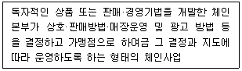
- 조합형 체인사업
- 임의가맹점형 체인사업
- 직영점형 체인사업
- 프랜차이즈형 체인사업
- 중소기업형 체인사업
(정답률: 89%)

2. 소비자기본법의 내용으로 옳지 않은 것은?
- 소비자기본법은 소비자의 권리와 책무, 국가지방자치단체 및 사업자의 책무, 소비자단체의 역할 및 자유시장경제에서 소비자와 사업자 사이의 관계를 규정함과 아울러 소비자정책의 종합적 추진을 위한 기본적인 사항을 규정한다.
- 소비자는 사업자가 제공하는 물품 또는 용역(시설물 포함)을 소비생활을 위하여 사용하는 자이다.
- 사업자는 물품을 제조(단, 가공 또는 포장은 제외), 수입, 판매하거나 용역을 제공하는 자이다.
- 소비자단체는 소비자의 권익을 증진하기 위하여 소비자가 조직한 단체이다.
- 사업자단체는 2인 이상의 사업자가 공동의 이익을 증진할 목적으로 조직한 단체이다.
(정답률: 38%)
3. 청소년 보호법상 매체물의 범위에 속하지 않는 것은?
- 「방송법」에 따른 보도방송프로그램
- 「영화 및 비디오물의 진흥에 관한 법률」에 따른 영화 및 비디오물
- 「음악산업진흥에 관한 법률」에 따른 음반, 음악파일
- 「전기통신사업법」에 따른 전기통신을 통한 부호·문언·음향 또는 영상정보
- 「게임산업진흥에 관한 법률」에 따른 게임물
(정답률: 37%)
4. 유통의 분류 및 기능에 대한 설명으로 옳지 않은 것은?
- 매매기능은 인적 불일치를 해결하는 기능이다.
- 상적 유통은 상거래 유통으로 제품의 매매를 말한다.
- 물적 유통은 물류로써 운송, 보관, 하역, 포장, 유통가공 활동을 말한다.
- 정보 유통은 생산자가 소비자에게 필요한 정보를 수집하여 제공하는 활동이다.
- 금융적 유통은 유통활동에서 발생하는 결제측면의 위험부담 경감, 대금결제 등의 활동이다.
(정답률: 21%)
5. 성불평등 현상에 대한 설명으로 옳지 않은 것은?
- 성차별이란 남녀 간의 차이를 이유로 사회 또는 가족 내에서 차별 대우를 받는 것을 의미한다.
- 유교적인 가치에서 비롯된 남아선호사상과 남성중심적인 문화가 원인 중 하나이다.
- 성불평등은 사회적 약자인 여성에게만 한정된 문제로 여성의 사회 진출 확대로 야기되었다.
- 임신, 출산, 육아 등으로 여성이 차별받지 않도록 제도적으로 보장하고 실효성을 높인다면 성불평등이 개선될 수 있다.
- 사회 구성원의 의식 개선이 필요하며 양성평등의식이 어릴 적부터 체득되도록 해야 한다.
(정답률: 79%)
6. 어떤 소매업의 특징에 대해 기술한 것이다. A, B에 해당하는 소매업을 올바르게 나열한 것은?
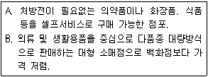
- A : 하이퍼마켓, B : 드럭스토어
- A : 카테고리 킬러, B : 하이퍼마켓
- A : 드럭스토어, B : 양판점
- A : 할인점, B : 슈퍼센터
- A : 멤버쉽홀세일, B : 아울렛
(정답률: 69%)
7. 인적판매의 역할에 대한 설명으로 가장 옳지 않은 것은?
- 단순한 판매처리 업무 뿐만 아니라 회사와 고객과의 관계에서 정보매개자로 활동한다.
- 수요창출을 위해 어떻게 고객이 요구하는 가치를 발견할 것인지 노력한다.
- 상담자로서 고객이 인식하고 있는 문제를 고객의 입장에서 해결해주려는 마음가짐이 필요하다.
- 단순히 제품 자체만이 아닌 고객의 총체적 욕구를 채워줄 수 있는 서비스까지 제공한다.
- 회사를 대표하는 입장이기에 회사의 이익만을 최대화하기 위해 노력해야 한다.
(정답률: 84%)
8. 판매원에게 임파워먼트(empowerment)를 함으로써 얻게 되는 장점으로 옳지 않은 것은?
- 고객에게 즉각적인 대응이 가능해진다.
- 판매원의 직무만족감이 상승할 수 있다.
- 판매원이 직무에 대해 책임감을 가질 수 있다.
- 판매원에 따른 재량행위로 고객의 공정성에 대한 기대가 상승할 수 있다.
- 판매원이 다양한 아이디어를 창출할 수 있다.
(정답률: 53%)
9. 다음 글 상자 안의 두 사례에서 공통적으로 나타난 유통경로 갈등은?
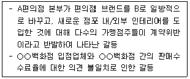
- 수평적 갈등
- 수직적 갈등
- 직접경로 갈등
- 간접경로 갈등
- 경로행동 갈등
(정답률: 55%)
10. 직업윤리에 대한 설명으로 옳지 않은 것은?
- 직업윤리는 직업에 종사하는 사람들이 지켜야 할 행동 규범이나 마음가짐을 의미한다.
- 직업윤리는 시대가 바뀌어도 내용은 달라지지 않는 고정적인 가치관을 의미한다.
- 직업을 생계유지와 부의 축적 수단으로만 여기는 것은 직업윤리에 해당하지 않는다.
- 직업윤리는 자신의 직업을 통해서 자아실현을 도모하는 것을 포함한다.
- 사회봉사의 기회로 여기며 자신의 적성과 능력에 맞는 직업을 탐색하는 자세가 필요하다.
(정답률: 68%)
11. 유통산업의 직/간접 경제적 역할로 옳지 않은 것은?
- 유통산업은 생산자와 소비자 간의 매개 역할을 한다.
- 유통산업의 발전을 통해 고용창출 효과를 기대할 수 있다.
- 유통구조가 효율화되면 제품의 최종 소비자가격은 높아지고 유통업자들의 수익이 높아져 공정한 이익의 분배가 이뤄진다.
- 유통산업의 발전은 유통업체 간, 제조업과 유통업체 간 경쟁을 촉진함으로서 물가 조정역할을 한다.
- 유통산업의 발전은 제조업의 경쟁을 촉진시켜 전체적 산업발전의 촉매역할을 한다.
(정답률: 69%)
12. 바코드(Bar Code)의 종류 및 마킹법에 관한 설명으로 옳은 것은?
- 3차원 바코드에는 QR코드, UPC코드 등이 있다.
- 한국공통상품코드(KAN)에서 한국의 국가식별코드는 ‘880’ 이다.
- 제조업체 및 수출업자는 인스토어 마킹(instore marking)을 사용한다.
- 소매 점포에서는 청과, 생선 등에 소스마킹(source marking)을 사용한다.
- 13자리 막대형 바코드는 높이 기준 50% 이상 훼손되면 판독이 불가능하다.
(정답률: 65%)
13. 다음 글 상자의 설명에 가장 적합한 운송방식은?
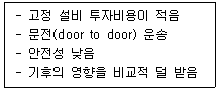
- 자동차 운송
- 철도 운송
- 선박 운송
- 파이프라인 운송
- 항공 운송
(정답률: 53%)
14. 다음 글 상자 안의 사례와 가장 관련이 깊은 유통기능은?
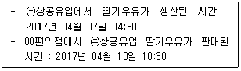
- 생산기능
- 보험기능
- 보관기능
- 금융기능
- 통신기능
(정답률: 64%)
15. 다음 글 상자에서 설명하고 있는 재고관리기법은?
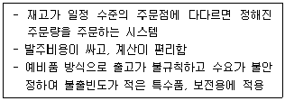
- 발주점법 방식
- 정기발주 방식
- 정량유지 방식
- 2중 발주점 방식
- 투빈(two-bin) 방식
(정답률: 53%)
16. 다음 글 상자 안에서 설명하고 있는 소매업 발전(진화)과정 이론은?
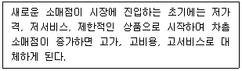
- 소매수명주기(retail life cycle)이론
- 아코디언(retail accordion)이론
- 변증법적(dialectic process)이론
- 소매수레바퀴(wheel of retailing)이론
- 자연도태(natural selection)이론
(정답률: 64%)
17. 서울, 부산, 광주에 있는 세 명의 생산자와 대전, 강릉, 제주에 있는 세 명의 소비자가 있다고 가정한다. 이때, 유통업체가 없는 경우 소비자와 생산자의 총 거래 횟수와 유통업체가 1개 업체만 존재할 경우 소비자와 생산자의 총 거래 횟수를 순서대로 나열한 것은?
- 18, 6
- 9, 6
- 36, 9
- 18, 9
- 6, 9
(정답률: 66%)
18. 중간상의 필요성에 대한 원칙 중 다음 글 상자 안의 내용에 해당하는 원칙으로 가장 옳은 것은?
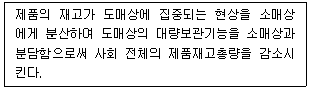
- 분업의 원칙
- 권한위임의 원칙
- 집중준비의 원칙
- 변동비 우위의 원칙
- 총거래수 최소화의 원칙
(정답률: 24%)
19. 산업재 유통 경로의 특징으로 가장 옳지 않은 것은?
- 구매자의 1회 구매량이 적고 소액이다.
- 구매자와의 장기 공급 계약이나 밀접한 전략적 관계에 의하여 거래가 이루어지는 경우가 많다.
- 제품이 기술적으로 복잡하여 상대적으로 고객서비스가 중요하게 여겨진다.
- 생산자가 고객에게 직접 판매하는 형태가 많다.
- 완제품이라기보다 재가공을 통해 부가가치가 창출되는 경우가 많다.
(정답률: 60%)
20. 유통업태 중 다음의 설명에 공통으로 해당하는 것으로 가장 적절한 것은?
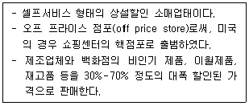
- 할인점
- 슈퍼마켓
- 편의점
- 아웃렛(outlet)
- 카테고리 킬러(category killer)
(정답률: 84%)
2과목: 판매 및 고객관리
21. 상품 매입에 대한 설명으로 옳지 않은 것은?
- 상품을 매입 하기 전에 먼저 마케팅 조사를 실시한다.
- 매입 계획 수립 시 마케팅 조사 후 얻은 자료를바탕으로 판매 경향 등을 조사 분석하여 계획을 세운다.
- 매입 상품 선정 단계에서는 품질이 좋고 가격이 저렴하며 고객들이 좋아하는 상품을 골라 매입한다.
- 매입처 선정 단계에서는 수익성이 보장되는 업자를 찾는 것이 최우선이므로 안정성은 무시하고 가장 저렴하게 판매하는 업자를 찾아 매입 계약을 한다.
- 현금할인, 수량할인 등과 상품 재고관리를 고려하여 매입 방법을 결정한다.
(정답률: 85%)
22. 한때는 유아용 제품으로 간주되었던 아스피린이, 현재는 심장질환이나 뇌졸중 위험을 줄여주는 저강도 성인용 아스피린으로 개발되어 판매되고 있다. 이러한 사례처럼 소비자들이 기존 제품에 대해 가지고 있던 이미지를 새로운 타겟층에게 가장 가깝게 접근하기 위해 새롭게 조정하는 활동을 뜻하는 용어는?
- 시장확장
- 기능개선
- 제품리포지셔닝
- 저가치전환
- 고가치전환
(정답률: 81%)
23. 고객 전화 응대시 요령으로 가장 부적절한 것은?
- 메모지와 필기구를 미리 준비한다.
- 알기 쉬운 말을 사용하고 중요한 사항이나 틀리기 쉬운 내용은 재확인한다.
- 내용은 간단명료하면서도 정중하게 전달한다.
- 자신이 모르는 질문이 반복된다면 시간이 오래걸리더라도 그때그때 고객을 대기시키고 확인한 후 알려준다.
- 상대방이 오래 기다리게 될 것 같은 경우에는 다시 전화를 드리겠다고 양해를 구하고 요청내용을 확인 후 확실한 내용으로 전달한다.
(정답률: 85%)
24. 점포구성에 관한 내용으로 가장 옳지 않은 것은?
- 입구는 넓은 것이 좋고 고객을 유인할 수 있어야 한다.
- 문턱은 도로와의 높이가 차이가 많이 나는 것이 좋다.
- 고객의 밀집과 혼잡을 피하기 위하여 문이 두 개 정도 있는 것이 바람직하다.
- 고객의 주요 동선은 고객의 흐름을 원만하게 하고 전 매장이 보이도록 구성해야 한다.
- 보조동선은 주 통로를 보조하여 원활한 고객흐름을 유도할 수 있게 한다.
(정답률: 77%)
25. 노인, 유아들과 같은 특정연령층이나 당뇨, 비만환자처럼 특별한 음식을 먹어야 하는 사람들을 대상으로 각각의 체질이나 요구에 맞게 만들어진 음식을 일컫는 용어는?
- 누트리셔널 푸드
- 슬로우 푸드
- 디자이너 푸드
- 실버 푸드
- 저칼로리 푸드
(정답률: 55%)
26. 대면판매의 장점에 대한 설명으로 옳지 않은 것은?
- 전문적 상품지식이 필요한 상품의 판매에 적합하다.
- 구매자와의 쌍방향 커뮤니케이션이 가능하다.
- 구매자를 이해시키고 설득시키는 데 좋은 수단이 된다.
- 고객접점을 늘릴 수 있어 판매비를 감소시킨다.
- 구매자의 반응을 즉시 파악할 수 있어 고객지향적으로 메시지를 조절할 수 있다.
(정답률: 82%)
27. 판매원의 행동으로 가장 옳지 않은 것은?
- 고객의 필요와 욕구를 파악하여 구매를 제안한다.
- 고객이 만족할 수 있는 선택에 이르도록 충분한 제품정보를 제공한다.
- 고객이 합리적이고 이성적으로 선택할 수 있게 보조해준다.
- 상품 및 서비스를 보여주고 실연하며 설명하여, 고객이 혜택을 이해하도록 돕는다.
- 전문가적인 태도를 갖고 소비자의 구매를 계획하고 설계하여 구매를 강요한다.
(정답률: 90%)
28. Parasuraman 등이 제시한 서비스 품질(SERVQUAL)의 몇 가지 특성에 대한 설명으로 옳지 않은 것은?
- 유형성(tangibles) : 서비스 장비 및 도구, 외형 물리적 시설 등 시각적으로 감지되는 부분
- 신뢰성(reliability) : 약속한 서비스를 믿게 하며 정확하게 제공하는 능력
- 반응성(responsiveness) : 고객의 요구에 대하여 신속하게 서비스를 제공하려는 의지
- 확신성(assurance) : 서비스 제공자의 지식과 예절과 신의, 신뢰와 자신감을 전달할 수 있는 능력
- 배제성(excludability) : 서비스 제공자의 사사로운 감정은 배제하고 전문가다운 자세로 고객에게 최선의 서비스를 제공하는 능력
(정답률: 68%)
29. 다음 글 상자에서 설명하고 있는 브랜드는?
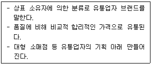
- 개별 브랜드(individual brand)
- 자체 브랜드(private brand)
- 공동 브랜드(co-brand)
- 내셔널 브랜드(national brand)
- 전문 브랜드(professional brand)
(정답률: 61%)
30. 공급망 관리(SCM : Supply Chain Management)의 기대효과로 옳지 않은 것은?
- 신규고객 획득을 위한 관리법으로 신규고객의 증가율을 데이터화함으로써 수익향상 및 전략적 경영에 도움을 준다.
- 재고 정보를 실시간으로 파악하여 물량을 조절할 수 있으므로 재고가 감소한다.
- 전략적 제휴를 토대로 한 업무수행이 가능하다.
- 신속대응능력의 향상을 가져온다.
- 아웃소싱, 제휴 등으로 인한 협력으로 인해 최소한의 자산으로 운영이 가능하여 투자비용을 최소화할 수 있다.
(정답률: 40%)
31. 글 상자 안의 상품들이 가장 효과적인 성과(매출, 이익 등)를 얻을 수 있는 디스플레이는?
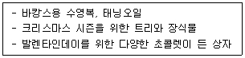
- 테마별 진열
- 옷걸이 진열
- 패키지 진열
- 컷 케이스 진열
- 구색 진열
(정답률: 72%)
32. 고객만족에 대한 설명으로 가장 옳지 않은 것은?
- 고객만족은 장기간 지속되며 소멸하지 않는다.
- 고객의 기대에 부응하는 것을 의미하며 그 결과로서 상품이나 서비스의 재구입이 이루어진다.
- 반복구매를 하며 그 관계가 강화되면 평생 고객이 될 수 있다.
- 고객의 심리적 만족감을 계속 유지할 수 있도록 관리가 필요하다.
- 고객의 기대가 충족되었을 때 일어나는 심리상태를 고객만족이라고 한다.
(정답률: 75%)
33. 다음 글 상자의 ( )안에 들어갈 적합한 용어는?
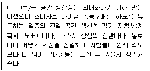
- 플래노그램(Planogram)
- 업-셀링(Up-Selling)
- 쇼윈도우(Show-window)
- 조닝(Zoning)
- 멀티숍(Multi-Shop)
(정답률: 45%)
34. 설비나 통로를 사각형으로 반복적으로 배치하고, 상품은 직선형으로 병렬 배치하여 비용 절감과 공간 효율성 극대화에 가장 적합한 점포 레이아웃은?
- 격자형
- 팔각형
- 타원형
- 루프형
- 자유형
(정답률: 75%)
35. 바코드(bar code)를 활용함으로써 얻어지는 효과로 옳지 않은 것은?
- 스캔 데이터 서비스의 제공
- 물류 관리의 높은 정확성과 신속성
- 부호화된 정보를 통해 빠른 정보획득 가능
- 방대한 양의 정보를 상당히 먼 거리에서도 판독 가능
- POS시스템의 효율적인 운영
(정답률: 76%)
36. POP에 대한 내용으로 옳지 않은 것은?
- Point of Purchase의 약자이다.
- 점포의 이곳저곳에 달려있는 제품관련 판매촉진도 POP에 속한다.
- 구매시점에 소비자들의 관심을 끌 수 있다.
- 지나치게 많으면 오히려 소비자의 관심을 끌지 못하는 경우도 있다.
- 일반적으로 유통업체가 제작하고 제조사에 제공하는데 제조사는 이것을 제대로 설치해 줄 필요가 있다.
(정답률: 64%)
37. 회사에서 브랜드 명(brand name)을 선정할 때 지켜야 할 원칙으로 가장 옳지 않은 것은?
- 소비자들이 부르기 쉽고 기억하기 쉬울수록 좋다.
- 한글이 아닌 외국어로 표현했을 때에도 어감이 좋아야 한다.
- 제품이 제공하는 편익이나 품질을 소비자가 알 수 있어야 한다.
- 다른 브랜드와 구별되는 독특함이 있어 소비자에게 각인 되어야 한다.
- 법적 문제 및 브랜드 등록 절차 준수보다는 시장에 빨리 진입하는 것이 유리하다.
(정답률: 84%)
38. 다음 사례는 서비스의 특징 중 어느 것과 가장 관련이 있는가?
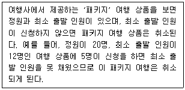
- 무형성
- 소멸성
- 가변성
- 비분리성
- 비통합성
(정답률: 68%)
39. 다음 글 상자의 ( )안에 들어갈 알맞은 용어는?
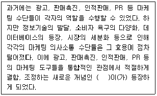
- IMC(Integrated Marketing Communication)
- EDI(Electronic Data Interchange)
- POS(Point Of Sales)
- CRM(Customer Relationship Management)
- SCM(Supply Chain Management)
(정답률: 58%)
40. 고객지향적 서비스를 제공함으로써 기대되는 효과로 옳지 않은 것은?
- 고객을 우선하는 태도로 고객들의 편익과 혜택을 먼저 고려하는 자세를 가질 수 있다.
- 고객만족 보다는 판매 및 수익창출에 많은 관심을 가지고 이익을 극대화 한다.
- 고객의 욕구충족과 지속적인 만족을 통하여 장기적인 고객확보가 용이하다.
- 고객의 가치를 충족시켜줌으로서 고객 충성도를 높일 수 있다.
- 긍정적인 감정반응에 영향을 주어 고객의 기업 이미지 및 호감도가 상승한다.
(정답률: 75%)
41. 불만 고객을 응대할 때 가장 적절한 방법은?
- 불만 고객이 왔을 시, 우선 현재 처리하고 있는 업무를 먼저 마무리 한 뒤에 응대한다.
- 고객의 불만을 듣고 있던 도중 고객의 잘못이 발견되면 즉시 반론하여 얘기한다.
- 본인이 최대한 해결하기보다는 상급자에게 보고하여 문제를 확대시킨다.
- 말과 행동을 정중히 하여, 불만을 최대한 긍정적으로 수렴한 후 대안을 제시한다.
- 해결책을 제시하면 일단 불만을 해결하였으므로 사후에 따로 관리할 필요는 없다.
(정답률: 86%)
42. TV 광고와 인적판매에 관한 설명으로 옳은 것을 모두 고르면?
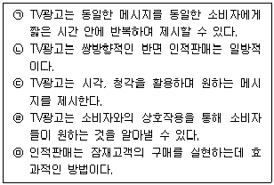
- ㉠, ㉢, ㉤
- ㉡, ㉢, ㉤
- ㉠, ㉢, ㉣, ㉤
- ㉠, ㉡, ㉢, ㉤
- ㉡, ㉢, ㉣, ㉤
(정답률: 66%)
43. 고객의 구매심리 7단계가 순서대로 올바르게 나열된 것은?
- 욕망 - 연상 - 흥미 - 주의 - 확신 - 비교선택 - 구매
- 연상 - 욕망 - 주의 - 확신 - 비교선택 - 흥미 - 구매
- 흥미 - 주의 - 욕망 - 연상 - 확신 - 비교선택 - 구매
- 욕망 - 흥미 - 주의 - 연상 - 비교선택 - 확신 - 구매
- 주의 - 흥미 - 연상 - 욕망 - 비교선택 - 확신 - 구매
(정답률: 53%)
44. 묶음가격전략에 대한 내용으로 옳지 않은 것은?
- 다수의 제품이나 서비스를 하나의 패키지로 묶어 특별가격으로 제시하는 가격전략이다.
- 생산자 또는 판매자는 수요를 확대할 수 있으며 거래비용을 감소시키고 고정자산에 대한 투자비용을 분산시켜 이익을 볼 수 있다.
- 생산자 또는 판매자의 입장에서 판매량이 증가한다는 장점이 있지만, 개별 제품보다 높은 가격으로 소비자에게는 유용하지 않은 가격설정방법이다.
- 영화관에서 1편에 10,000원씩 팔던 것을 서로 다른 영화 2편을 18,000원으로 판매하는 경우의 예가 포함된다.
- 서비스 특성 상 묶음을 하지 않으면 안 되는 경우가 있는데 의료서비스에서 엑스레이 촬영과 진단 서비스가 패키지로 판매되는 예가 이에 포함된다.
(정답률: 51%)
45. 마케팅 믹스를 구성하는 변수로 옳지 않은 것은?
- 제품(Product)
- 가격(Price)
- 촉진(Promotion)
- 포지셔닝(Positioning)
- 유통(Place)
(정답률: 60%)